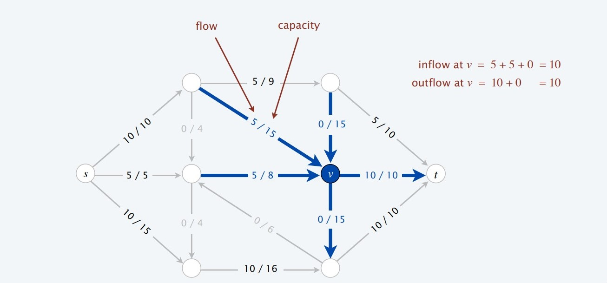
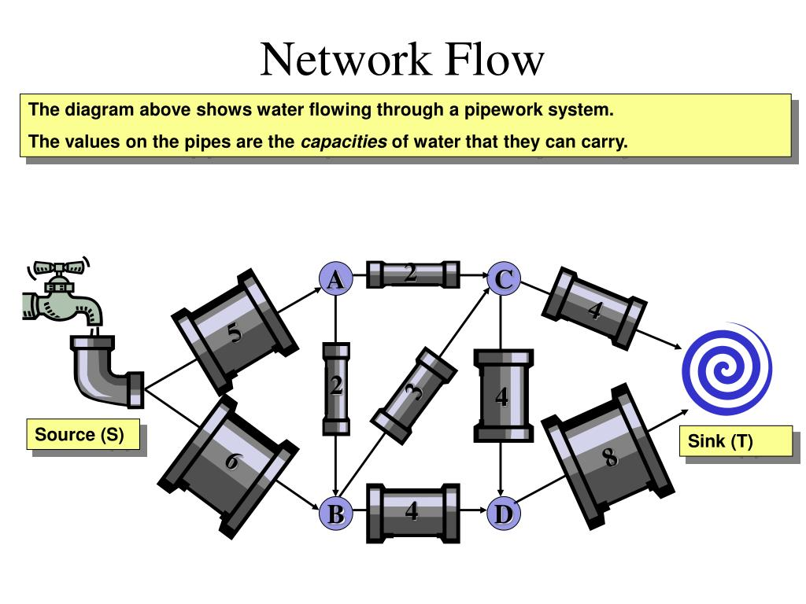

Algorithms
Network Flow, Ford fulkerson, Edmund karp
Networks
Networks are data structures that share lots of structural similarities to graphs. Networks can structurally be thought of as weighted graphs and then some more. Each edge in a network has non-negative 'flow' & 'capacity' weights.
Every network consists of a source and a sink(in some cases there may be more than one source and sink). Sources will generate flow while sinks will drain the flow. Since networks represent closed systems, any flow that is generated by a source must be eventually drained via a sink. This is called the conservation of flow.
For example, if a network represents a water pipeline, the nodes of the network represent junctions(water pipe intersections), edges represent pipes that connect the junctions, capacities may represent the maximum rate of water that can flow through a pipe, and flows will represent the actual rate of water flowing through a the pipe at a time. One common question associated with this problem may be "What is the max rate of water that can be pushed from the faucet to the sink given the water flow has to obey the capacity constraints. "
The term 'flow value' represents the overall amount of flow generated by every source in a network. Similarly, the term 'maximum flow' represents the maximum 'flow value' possible given the capacity constraints of the network.
So, what type of behaviors are commonly associated with networks? The two most common ones are 1.finding the value of the maximum flow within the network and 2. finding the 'Minimum cut' of a network. The 'minimum cut' represents a set of edges, with minimum overall capacity, that will disconnect the network(i.e flow from source to sink is not possible). These two might present themselves in different ways in real life problems. There is a very interesting theorem max-flow min-cut which basically says the value of these two quantities is equal.
Finding the maximum flow is basically an optimization problem: What should the amount of flow in each edge be so that the overall flow value is maximized. Due to this, a lot of real life problems can be reduced to and be represented using a network data structure. Several combinatorial optimization problems that can be modeled by bipartite graphs and solved via bipartite matching algorithms can be reduced to Network flow algorithms.
One of the main reasons why networks are powerful is because of the fact that there are known efficient algorithms for solving network flow problems. For example, the famous " 8 Queens" problem is usually solved via recursion & backtracking and possibly optimized via dynamic programming. Depending on the variation of the problem, this approach will solve the "8 Queens" problem in polynomial time. However, by eventually reducing this problem to a network flow problem, it can be solved in a time analogous to just a few iterations of depth first search/breadth first search. Another example of a problem that can be reduced to a flow network problem is that of edge-disjoint paths
Most algorithms that solve network problems usually deal with a single source and a single sink. However, this won't be a problem since such type of variations that include more than one source and sink can be reduced to networks with a single source & sink.
A few important terms related network flow algorithms:
- Reverse edge: the reverse edge 'e' 'of an edge 'e' is directed in the opposite direction. It always has a capacity of zero and a flow added to a reverse edge will negate that of the original edge. These edges will not have any side effect in the overall net flow of a network since they have zero capacity. Not having an edge is basically the same as having an edge of capacity zero.
- Residual capacity: the amount of flow that can be pushed to an edge. This is difference between the capacity of an edge and its current flow.
- Residual network: This is the original network with reverse edges and residual capacity added to it.
- Augmenting path: an s-t path in which every edge in the path has a non-zero residual capacity.
Given a residual network, one algorithm that solves for the max flow repeatedly attempts to find an augmenting path. For each agumenting path the algorithm finds, it finds the edge along the path with the smallest residual capacity, and pushes that value as a flow to every edge along the augmenting path. The algorithm terminates when there is no longer an augmenting path.
If the algorithm used to find the augmenting path is depth-first search, this algorithm is known as Ford-Fulkerson's algorithm. If breadth-first search is used, it's called Edmund-Karp's algorithm. Analysis of these two algorithms can be found here , while the ful implementation of the algorithms can be found here .